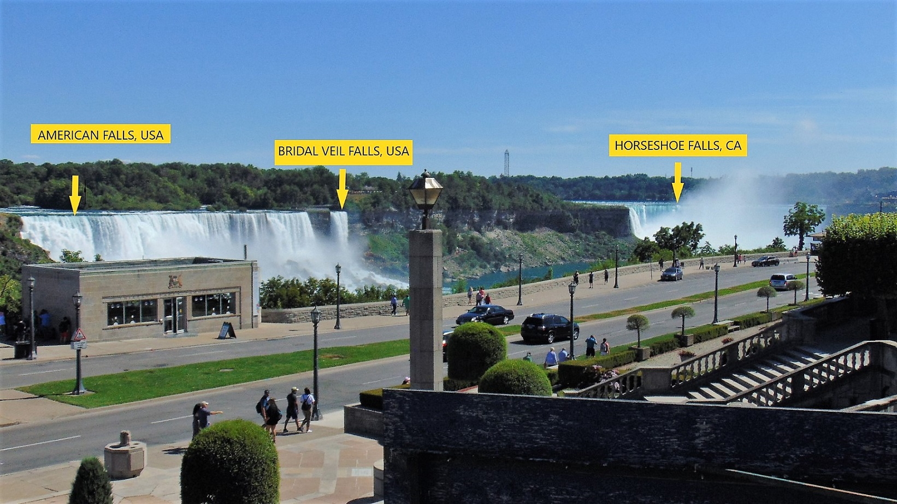

Niagara Falls Vacation

Picture of the Niagara Falls; Horseshoe Falls, Canada
Departure date
On July 18, 2018, at 4:00 AM in the morning my family and I when on a trip to visit Niagara Falls Park in New York. The trip experiences were one of the best family vacations ever. We did not spend much time planning the trip as we usually do before any major family vacation trip. The vacation trip was an impromptu decision made at the dinner table.
Preparing for the trip
Planning
I was little apprehensive about the lack of planning and the short time frame set to depart. However, with a shortage of time to execute all need it step prior the trip the entire family pushes forward to make the trip possible. The excitement of the trip overwhelmed us with enthusiasm and wonder. Surprisingly; all step requires prior the trip was accomplished in a timely manner:
- Passport update
- Trip logistic:
- Meals
- Lodging
- Route selection
- Refueling poin
- Rest stop
- Precautionary action with:
- Bank notification
- Mobile phone coverage
- State Department notification
While going through the trip preparation; the trip idea filled like a surreal as things fall in place so quickly. In particular, the renewing of the passport, that we much need it to cross the border and explore the Niagara Falls in the Canadian side.
Resting Areas
We made several stops through the trip but two of the resting area that we like the most were:
- McKee’s Half Falls Rest Area; Snyder County; PA
- Montgomery Pike Scenic Overlook; Montgomery; PA
McKee’s Half Falls Rest Area; Snyder County; PA
McKee’s Half Falls Rest Area in the Snyder County, Pennsylvania. This an amazing place to rest with a remarkable scenario view of the Susquehanna River. This area has a barbeque area, bathroom, and benches facing the river.
Montgomery Pike Scenic Overlook; Montgomery; PA
Montgomery Pike Scenic Overlook in Montgomery, Pennsylvania, provide a scenic view that reach out to Williamsport, PA. This rest stop did not count with many amenities, nevertheless, it was a great place to stretch the legs and enjoy the scenic view of the valley below and the West Branch Susquehanna River. The scenic overlook does not have restroom facilities, it only has benches and tower viewer.
Continuing with the trip
We proceed our trip to the Niagara Falls through New York upstate countryside until we reach Niagara Falls City in New York.
Traffic Sign pointing to the attraction park
Finally we reached the city of Niagara Falls, NY
Niagara Falls encompassed three waterfalls, from largest to smallest, the Horseshoe Falls (also known as the Canadian Falls), American Falls and Bridal Veil Falls.
Here we can see the three different falls of the Niagara Falls
After seven hours driving, we reach our hotel next to the Niagara Fall Park. Shortly after checking in the hotel we head out to the park. The scenic view of the Niagara Falls is breathtaking. All park amenities within walk distances from the hotel.

View of the Rainbow Bridge, crossing point to Canada
There is different amenity at the Niagara Falls, but the one we enjoy the most was the Maid of the Mist boat tour. It is a short boat tour that takes you to a enclose encounter with the majesty of the falls.

Maid of the Mist viewed from the observation tower
The below picture ilustrate how close we got from the falls, this one inparticular is the American Falls on the USA site of the Niagara Falls Park.

Closer view of the American Falls
Crossing to Canada
The following date after our arrival we head out to cross to Canada. The crossing is a few minutes walk to the Canada entry point in the Rainbow Bridge.

A view of Rainbow Bridge from the USA lokking into the Canada entry point
Horseshoe Falls, CA
Above the magnificence closer view of the Horseshoe Falls from the Canada site of the Niagara Falls Park.
Panoramic view of the Niagara Falls from the Rainbow Bridge
Our family three date vacation in the Niagara Falls was one full of excitement and adventure. The Niagara Falls experience created lasting vivid memories. The scenic view of this park is captivating and mesmerizing. The only regret we have is that we should book the hotel for a longer stay. There so much to see at this place that it will take as a minimum a week to visit each attraction on both sides.